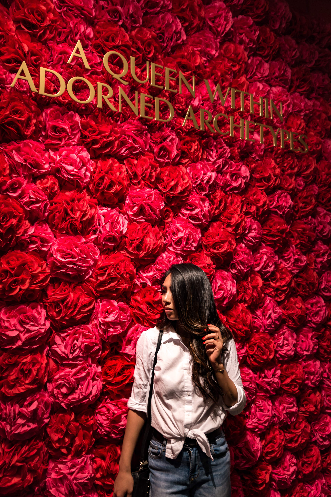
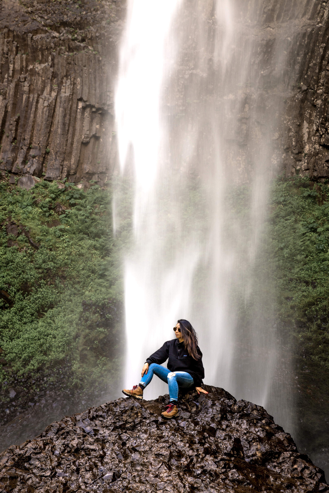

Shasta Caverns
Lassen National Park
McArther-Burney Park
Burney Falls
Potem Falls
Hatchet Creek
Lava Beds National Monument
Crater Lake
Eugene, OR
Seattle, WA
Pike Place
Space Needle
Chihuly Garden
Museum of Pop Culture
Lake Crescent
Olympic National Park
Sol Duc Falls
Hoh Rainforest
Hall of Moss
Kalaoch and Ruby Beach
Quinalt Rainforest
Portland, OR
Multanomah Falls
OMSI - Pixar Exhibit
Old Chinatown / Nob Hill Area
Downtown Portland
Freaky but True Peculiarium
Burney Falls at Shasta campgrounds!
Camille striking a pose.
Museum of Pop Culture (MoPOP) in Seattle has some dope exhibits including an area dedicated to women and fashion.
Most of Lassen National Park was closed due to the snow but we were lucky to get a nice view of the lake.
Bottom of Latourell Falls in Portland, OR.